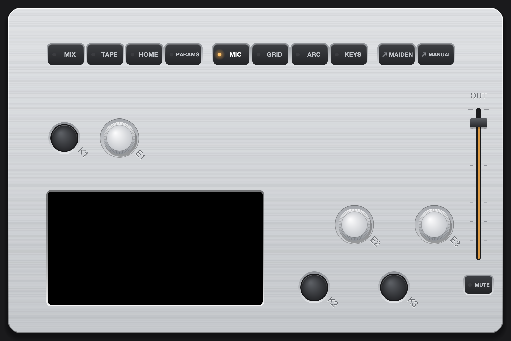
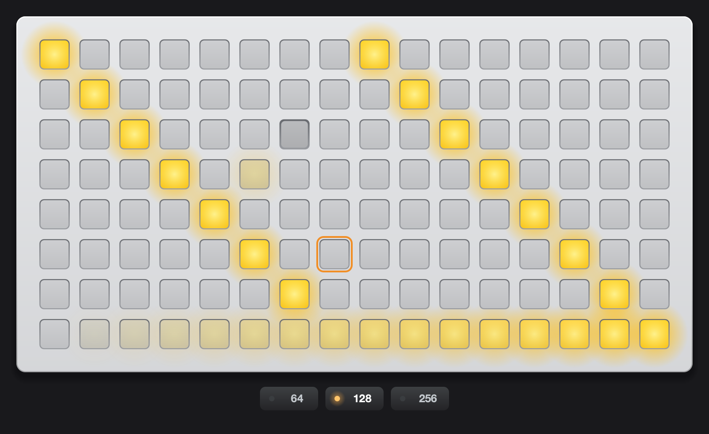
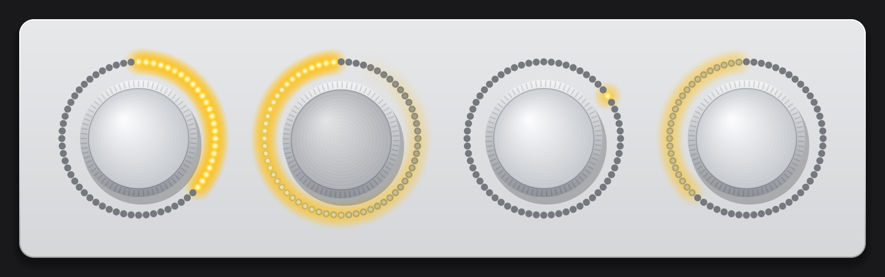
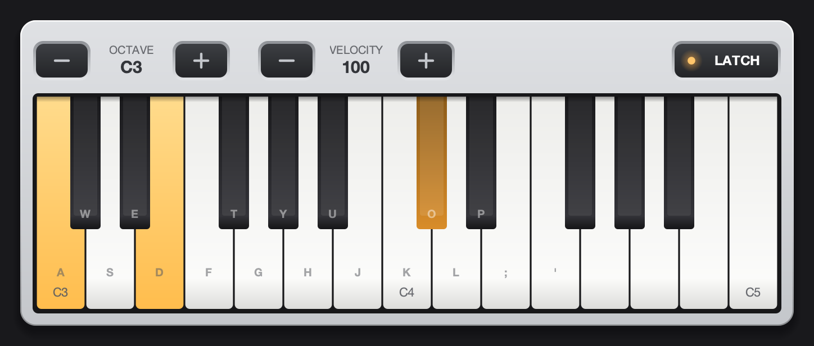

Verdandi runs norns natively on macOS: the same scripts, engines, softcut and maiden, in a window that is the device. Standalone, or as an AUv3 inside your DAW.

The community's scripts run unchanged. Around them, Verdandi adds what a computer is good at: every sound on the machine as input, drag and drop, a mouse and a keyboard.
Install and edit scripts in maiden, the norns web editor, exactly like on the device. SuperCollider engines, softcut and tape are all there.
Record the microphone or interface, the sound of every other app, or a single app, straight into a script. A video in the browser, a soft synth. No loopback driver.
Insert the plugin in Logic, Live, Bitwig or Reaper: the track's audio and MIDI go into norns, and norns comes back into the track.
Plug in monome grids and arcs, crow and any MIDI controller over USB. No hardware? Open the virtual grid, arc and MIDI keyboard.
Drag samples from the Finder, Voice Memos or a sample browser onto norns. A script that asks for a file opens the Finder right next to its own browser.
Click the keys, drag the knobs, mix on the MIX page by mouse. return confirms, esc goes back. An output fader and MUTE sit right on the box.
The virtual grid and arc behave like the real ones: scripts see a 64, 128 or 256 grid and a four-ring arc, the keyboard plays MIDI. Real hardware takes over when you plug it in.



One disk image, everything inside: norns, SuperCollider, JACK, maiden, the plugin, the manual and the licenses.
Verdandi.dmg from the latest release.